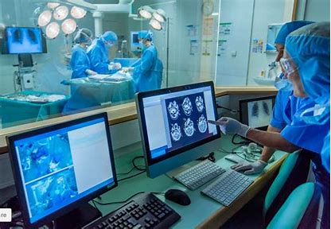
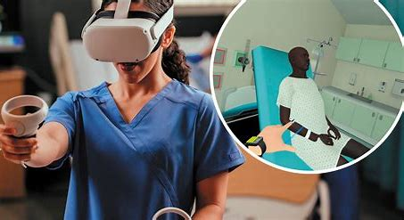

Computers play a pivotal role in modern medicine, enhancing diagnosis, treatment, and patient care. They facilitate the analysis of vast amounts of medical data, enabling more accurate and timely diagnoses through tools like imaging software and diagnostic algorithms. Electronic health records (EHRs) streamline patient information management, improving communication among healthcare providers. Additionally, computers support telemedicine, allowing remote consultations and monitoring, which expands access to care. Advanced technologies such as artificial intelligence and machine learning are increasingly used to predict patient outcomes and personalize treatment plans, revolutionizing the way healthcare is delivered.
In the realm of patient monitoring and management, computers have revolutionized how healthcare providers track and support patients, particularly those with chronic conditions. Wearable devices, such as smartwatches and fitness trackers, continuously collect vital health data—like heart rate, blood pressure, and activity levels—transmitting this information to healthcare systems in real-time. This data integration allows for proactive management of conditions like diabetes and hypertension, enabling timely interventions when anomalies are detected. Furthermore, advanced algorithms analyze this data to identify trends and predict potential health issues before they escalate, enhancing preventive care. Telehealth platforms complement this by allowing for regular virtual check-ins, empowering patients to take an active role in their health while ensuring that providers can monitor progress and adjust treatments as necessary. This synergy between technology and patient care ultimately leads to improved health outcomes and greater patient satisfaction.
In the realm of medical research, computers have transformed the way scientists analyze data and conduct studies. High-performance computing allows researchers to simulate complex biological processes and analyze genomic sequences at unprecedented speeds, accelerating the discovery of new treatments and therapies. Data mining techniques enable the identification of patterns and correlations within large datasets, helping to uncover insights that can lead to breakthroughs in understanding diseases. Furthermore, electronic health records (EHRs) facilitate collaborative research by providing a centralized database for clinical trials, allowing researchers to track patient outcomes and share findings more effectively. This computational power not only enhances the efficiency of research but also fosters innovation in developing personalized medicine approaches tailored to individual patient needs.
Computers also play a crucial role in medical education and training, revolutionizing how future healthcare professionals acquire knowledge and skills. Simulation-based learning platforms enable students to practice clinical procedures in a risk-free environment, honing their abilities before interacting with real patients. Virtual reality (VR) and augmented reality (AR) technologies provide immersive experiences that enhance anatomical understanding and surgical techniques. Additionally, online learning management systems allow for the dissemination of educational resources, enabling students and practitioners to access the latest research and continuing education courses from anywhere in the world. This integration of technology into medical education not only improves the training process but also fosters a culture of lifelong learning among healthcare professionals, ultimately leading to better patient care.
